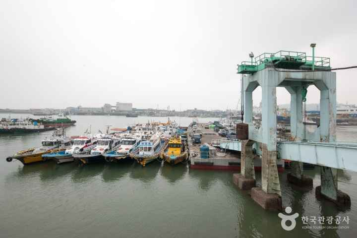
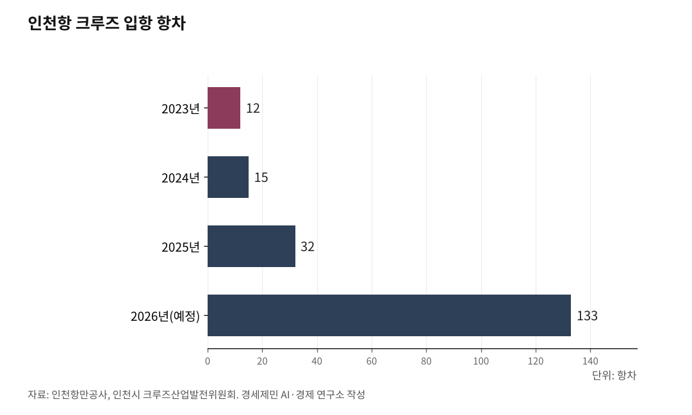

[인천해양산업, 생존기로㉓] 인천항 크루즈 1월 64항차서 3월 133항차, 모항 도시 전환 갈림길
부산 420항차 환태평양·인천 130항차대 환황해 분업 구도, 모항 운영 선사 3→8개사
한중 카페리 1300항차 화물 동맥, 여객 1일 1026명에 그쳐 100% 전수 X-ray 검색 한계
중국발 81% 의존 구조, 보따리상 마진 소멸·LCC 증편이 여객 회복 막아
2026년 인천항 크루즈 입항 예정 항차가 1월 64항차에서 3월 133항차로 두 달 만에 두 배 넘게 늘었다. 같은 해 부산항 크루즈 입항 예정 항차는 420항차다. 부산은 환태평양 크루즈 거점으로, 인천은 환황해 크루즈 거점으로 동시에 커지는 분업 구도가 펼쳐졌다. 한중 카페리 1300항차 화물 동맥에 크루즈 130항차대가 더해지면서 인천항이 기항지에서 모항 도시로 전환되는 신호가 나타났다. 다만 132항차 중 107항차(81%)가 중국발이라 외부 변수에 노출돼 있다.

1. 인천항 크루즈, 1월 64항차서 3월 133항차로 급증
인천항만공사(IPA)는 2026.01.06. 보도자료에서 1월 기준 인천항 크루즈 입항 예약 64항차, 예상 여객 약 19만명으로 발표했다. 그뒤 2026.01.28. 경향신문은 입항 확정 항차 120항차로 보도했다. 2026.03.10. 인천시 크루즈산업발전위원회는 올해 인천항 크루즈 입항 133항차, 약 20만명으로 발표했다. 두 달 사이 64항차에서 133항차로 두 배 넘게 늘었다.
서울경제 2026.03.15. 보도는 IPA 확정 자료를 근거로 132항차, 여객 40만4266명, 정원 41만459석, 빈좌석 1.5%, 승무원 12만9000여명 포함 총 승선 인원 53만명 이상으로 전했다. 인천시 발표 20만명과 IPA 확정 40만4266명의 차이는 인천 방문 외래 관광객과 환승 포함 전체 여객 기준 차이로 풀이된다.
성장 속도는 가파르다. 2023년 12항차, 2024년 15항차, 2025년 32항차(여객 7만9455명)로 회복기를 거쳤다. 2026년 130항차대는 종전 최다였던 2013년 95항차를 넘어선다. 인천항 모항 운영 선사는 2025년 3개사에서 2026년 8개사로 늘었다. 모항 항차는 승객 승·하선뿐 아니라 선박 유류 공급, 식자재 납품, 선용품 조달이 현지에서 이뤄지면서 단순 기항 대비 수십 배의 지역 경제 효과를 낸다.
인천시는 2026.03.10. "제2차 인천 크루즈 산업 육성 5개년 계획(2026~2030)"을 마련했다. 핵심 과제는 전략적 유치 마케팅, 차별화한 관광 콘텐츠 개발, 크루즈 관광객 수용태세 개선, 크루즈 산업 생태계 조성이다. 인천시는 인천관광공사와 협력해 크루즈 터미널·상상플랫폼·송도 잇는 무료 셔틀버스 운영을 확대한다.

2. 132항차 중 107항차 중국발, 외부 변수 의존 구조
132항차 가운데 107항차(81%)가 중국발이다. 2025년 말 한일 관광 분쟁("일본금지령") 이후 중국발 일본행 노선이 인천으로 몰린 결과다. 톈진동방국제크루즈 드림(Dream)호는 총톤수 7만7000톤, 수용 정원 약 2270명 규모로 2025.09.29. 중국 단체관광 무비자 시행 첫날 인천항에 첫 입항했다. 드림호는 2026년 1~2월 인천항에 11항차 들어온다.
IPA 관계자는 "크루즈 입항 예약은 보통 1년 전에 확정되는데 이렇게 급하게 예약되는 것은 정치적 이유가 클 것"이라며 "통상 일본으로 가려던 크루즈가 인천항으로 항로를 바꾸는 경우가 많은 것으로 보인다"고 청년일보 2026.01.10. 보도에서 밝혔다. 서울경제는 "올해 항차의 80% 이상이 중국발에 집중돼 있어 중·일 관계가 회복될 경우 노선이 다시 일본으로 이동할 위험이 있다"고 짚었다.
IPA는 "최종 목표는 중국발 노선 의존에서 벗어나 인천 자체가 크루즈 목적지가 되는 것"이라며 환영·환송 프로그램과 기항 콘텐츠 정착으로 자생력 확보에 나섰다. 인천시는 인천국제공항과 연계한 플라이 앤 크루즈(Fly & Cruise) 복합 상품으로 글로벌 시장을 공략하고 있다. 2026.04. 미국 마이애미에서 열린 씨트레이드 크루즈 글로벌 박람회에서 유치 성과를 거뒀다고 천지일보가 보도했다.
3. 부산항 420항차, 환태평양 거점 가속
부산항 크루즈 입항 예정 항차는 2024년 114항차, 2025년 203항차, 2026년 420항차로 늘고 있다. 부산항만공사(BPA)는 항공·철도 연계 크루즈, 준모항 크루즈, 1박2일 체류형 크루즈로 상품을 다양화했다. 부산이 환태평양 거점으로 외연을 넓히는 사이 인천이 환황해 거점으로 자리잡는 분업 구도가 가시화됐다.
부산은 거점 인프라도 두 곳을 운영한다. 영도구 부산국제크루즈터미널과 중구 부산항 북항 크루즈터미널이다. 부산항만공사는 2026.01.05. 두 터미널 명칭을 북항·영도로 구분 정비해 이용 혼선을 해소했다.
부산 영도 동삼혁신지구에는 해양과학기술 산학연 협력센터가 들어선다. 총사업비 322억원(국비 209억원·시비 89억원·추가 24억원)으로 연면적 1만385제곱미터, 지상 7층, 지하 1층 규모다. 2026.07. 개관을 목표로 부산테크노파크와 한국해양수산개발원(KMI)이 공동 위탁 운영을 맡는다. 부산연구원은 2025.08.27. 차세대 쇄빙연구선 모항 후보지로 부산국제크루즈터미널과 부산항 북항 1부두를 적합 지역으로 평가한 보고서를 냈다. 부산의 시선이 환태평양 크루즈에 북극항로 모항까지 확장됐다.
4. 한중 카페리 1300항차, 여객은 회복 절반에 못 미쳐
인천항 한중 정기 카페리는 10개 항로 연 1300항차 규모다. 2024년 인천항 컨테이너 물동량 355만8455TEU 가운데 대중국 수출 66.0%, 수입 56.2%가 중국과 오갔다. 카페리 노선은 환황해 대중국 화물 동맥 역할을 한다.
여객은 다르다. 코로나19로 중단됐던 한중 카페리 여객수송은 2023.08.부터 순차 재개됐다. 청도·위해·석도 항로가 2023.08., 옌타이 2023.09., 롄윈강 2023.12., 다롄 2024.04., 단둥 2025.04.에 여객을 재개했다. 잉커우·친황다오·톈진 3개 항로는 여객을 재개하지 못했다. 2025.05. 기준 인천항 국제여객터미널 이용 여객은 1일 평균 1026명으로 2024년 977명에서 49명 늘었다. 코로나19 이전 연간 200만명에 비하면 절반에 못 미친다.
여객 회복이 지연되는 원인은 네 가지로 정리된다. 첫째, 보따리상 마진 소멸이다. 중국 현지 상품 품질이 한국 제품의 80~90% 수준에 도달하면서 보따리상 무역 마진이 사실상 사라졌다. 둘째, 저비용항공사(LCC) 증편이다. LCC 중심 대체 노선이 늘면서 여객선의 시간 대비 비용 강점이 약화됐다. 셋째, 인천항 국제여객터미널의 100% 전수 X-ray 검색이다. 무작위 선별 검색을 시행하는 공항 통관과 달리, 인천항은 위탁수하물 인프라 부족과 보따리상 상업용 물품 반입 차단을 이유로 입국 승객 전원에 전수 검색을 적용한다. 평일 오전 대형 카페리 2척이 동시에 접안하면 최대 1000명이 입국장 검색대로 집중된다. 넷째, 한중 단체관광 무비자 정책(2025.09.29. 시행) 이후 인적 교류 환경이 비자 면제 수준에 가까워졌으나 카페리 통관 체계가 새 환경에 적응하지 못하고 있다.
인천항만공사는 한중 카페리 여객 증대를 위해 관계기관과 공동 마케팅을 시작했다.
5. 한중 FTA 시범지구 10년, 538억위안 협력축
2015년 한·중국 자유무역협정(FTA) 제17조 25항은 인천경제자유구역(IFEZ)과 산둥성 웨이하이시를 지방경제협력 시범지구로 지정했다. 두 도시는 매년 공동위원회를 열어 2025.09. 제8회 공동위원회까지 개최했다.
한국과 웨이하이 간 무역은 2014년 320억9000만위안에서 2024년 538억6000만위안으로 67.8% 늘었다. 웨이하이 전체 무역의 26.4%를 한국이 차지한다. 2024년 웨이하이항 대한국 수출입은 1540억7000만위안으로 중국 항만 가운데 3위였다. 웨이하이에 한국이 투자해 설립한 기업은 2014년 15개에서 2024년 62개로 4배 이상 늘었다.
웨이하이는 한·중국 FTA 지역경제협력 조정사무소와 홍보센터를 설립하고 한국 상품 글로벌 공급센터와 중한 현대물류산업단지를 운영한다. 평택항에 해외창고를 두고 "제조-평택-웨이하이-중국 내륙" 한중 일관 공급망을 만들었다. 인천에는 한·중국 FTA 시범지구로 지정된 인천경제자유구역청이 협력 채널을 가동하고 있다.
6. 환황해 모항 도시 인천, 권한 이양이 갈림길
인천시의회는 2026.02.12. 제306회 임시회 폐회 후 결의대회를 열고 "인천지방해양수산청 및 인천항만공사 관리·감독권 등 단계적 이관 촉구 결의안"을 채택했다. 박창호 의원(국민의힘 비례) 대표 발의로 통과된 결의안은 항만 정책과 도시 정책의 입체적 연계를 위해 인천시가 통합 거버넌스를 갖춰야 한다고 명시했다. 비용편익분석(B/C) 결과 1.45를 행정 적격성 근거로 제시했다.
중앙집권적 거버넌스의 한계는 인천 현장에서 누적돼 왔다. 수도권 배후 경제와 국가 수출입 물동량을 지원할 핵심 거점으로 추진된 오토밸리 자동차 물류 클러스터 사업은 10년 넘게 첫 삽도 뜨지 못하고 표류 중이다. 인천시 핵심 도시재생 프로젝트인 제물포 르네상스의 마중물 사업이자 시민 복합 문화공간인 상상플랫폼 개관 과정에서도 부지를 막고 있던 보안 펜스와 콘크리트 철책 철거에 수십 년에 걸친 중앙기관 간 협의가 필요했다.
크루즈 130항차대 모항 도시 전환, 카페리 1300항차 화물 동맥, 한중 FTA 시범지구 10년 538억위안 협력축이 인천 한 자리에 모여 있다. 인천이 환태평양 부산과 분업 구조에서 환황해 모항 도시로 자리잡을지는 중국발 81% 의존 구조를 어떻게 줄이느냐, 카페리 100% 전수 X-ray 통관을 어떻게 풀어내느냐, 인천항 관리·감독권을 어떻게 지자체로 이양받느냐에 달렸다.
참고문헌
·"인천항, 2026년 크루즈 시즌 첫 포문 열어", 인천항만공사 보도자료, 2026.01.06. https://www.icpa.or.kr/article/view.do?menuKey=400&boardKey=217&articleKey=31393
·"인천항만공사, 입항 확정 항차 3.75배 쑥…글로벌 크루즈 거점 도약", 경향신문, 2026.01.28. https://www.khan.co.kr/article/202601282126035
·"인천시, 동북아 크루즈 허브 도약 시동 크루즈 133항차·20만명 인천 찾는다", 내외일보, 2026.03.10. https://www.naewoeilbo.com/news/articleView.html?idxno=2317408
·"한일령에 뱃머리 돌렸다…크루즈 특수 맞은 인천항", 서울경제, 2026.03.15. https://www.sedaily.com/article/20019541
·"중국발 크루즈, 한일령 여파에 인천으로…올해 입항 64항차 확정", 청년일보, 2026.01.10. https://www.youthdaily.co.kr/news/article.html?no=209036
·"크루즈 131항차 시대 연 인천, 세계 최대 박람회서 시장 공략", 천지일보, 2026.04.17. https://www.newscj.com/news/articleView.html?idxno=3394506
·"중국 단체관광 무비자 첫날 크루즈 2700명 인천항 북적", 한국NGO신문, 2025.09.29. https://www.ngonews.kr/news/articleView.html?idxno=215136
·"부산항만공사, 공공주도로 북항 재개발 승부수, 크루즈 420척 시대 연다", 아주경제, 2026.01.23. https://www.ajunews.com/view/20260121171912909
·"부산항 크루즈 터미널 명칭 개편, 북항·영도 구분으로 이용 혼선 해소", 부산항만공사 보도자료, 2026.01.05. https://www.busanpa.com
·"북극항로 모항 최적지는 부산국제크루즈터미널·북항 1부두", 부산일보, 2025.08.27. https://www.busan.com/view/busan/view.php?code=2025082718405457094
·"해양산업 AI 혁신 거점, 내년 부산서 닻 올린다", 서울경제, 2025.10.09. https://www.sedaily.com/NewsView/2GZ40PR7D2
·"IPA, 한중 카페리 여객 증대 관계기관 공동 마케팅 전개", 인천뉴스, 2025.06.23. https://www.incheonnews.com/news/articleView.html?idxno=426888
·"인천항, 2024년 컨 물동량 355만 8455TEU 기록", 해양한국, 2025.02.03. https://www.monthlymaritimekorea.com/news/articleView.html?idxno=53261
·"Xinhua Silk Road: China Weihai, S. Korea Incheon building up momentum to bolster local cooperation", PR Newswire, 2025.06.08. https://www.prnewswire.com/apac/news-releases/302475985.html
·"인천시·중국 웨이하이시, 제8회 지방경제협력 공동위원회 개최", 인천광역시 보도자료, 2025.09.02. https://www.incheon.go.kr
·"인천시의회, 인천해수청·IPA 권한 인천시 이관 촉구", 내외일보, 2026.02.12. https://www.naewoeilbo.com/news/articleView.html?idxno=2310245
·한·중국 자유무역협정 협정문 제17조 25항, 산업통상자원부 FTA 포털. https://www.fta.go.kr/cn/doc/1/
※ 이 기사는 AI 프로그램 클로드를 활용해 작성했습니다.
#인천해양산업 #크루즈133항차 #한중카페리 #환황해모항 #부산420항차 #한중FTA시범지구 #웨이하이 #플라이앤크루즈 #한일령 #생존기로